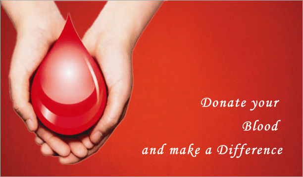
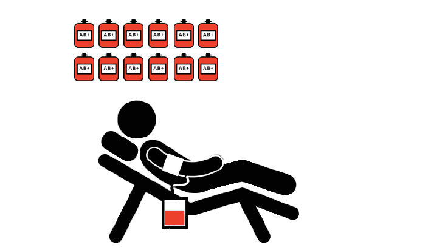

<p xmlns:text-align="http://www.w3.org/1999/xhtml"></p>
<h1 style="text-align: center;"><strong></strong></h1>
<h1 style="text-align: center; color:red;"><strong>Red Revolution</strong></h1>
<p style="text-align: justify;">Every time you donate blood, you save lives. Blood cannot be manufactured, and there is no substitute for it. It is in constant demand for accident victims, hemophiliacs, surgeries, infants, patients battling cancer and many more. In addition, blood supplies need to be replenished constantly, as blood products have a short shelf life. With blood shortages occurring worldwide, it is important to create a network of young blood donors who commit to donate blood regularly. India currently has a blood shortage of 3 millions per year out of 12 millions requirement per year.</p>
<p style="text-align: justify;">Red Revolution aims to target the youth and encourage them for blood donation.An important feature regarding emergency condition being the availability of nearby available blood banks is that if they are not available then we give details for registered donors if available. Red Revolution also appreciates your effort for blood donation and that's why we are providing an e-certificate for our donors which can be shared on social media like twitter, facebook &amp; whatsapp and you can present yourself as an active participant for Red Revolution.</p>
<h3 style="text-align: center;"></h3>
<p style="text-align: center;"><strong>No time? A blood donation only takes about <br /><strong>10 minutes</strong> of your time!</strong></p>
<p style="text-align: center;"><strong></strong></p>
<p style="text-align: center;"><strong>Every time you donate blood,</strong><strong>you can save up to 3 lives!</strong></p>
<p style="text-align: center;"></p>
<p style="text-align: center;"><strong>Adults have around 10 pints of blood in his body.</strong><strong>one pint of blood is given during donation.</strong></p>
<p style="text-align: center;"></p>
<p style="text-align: center;"><strong>Donors can give blood every 56 days.</strong><strong>Platelet donor can give every 7 days.</strong></p>